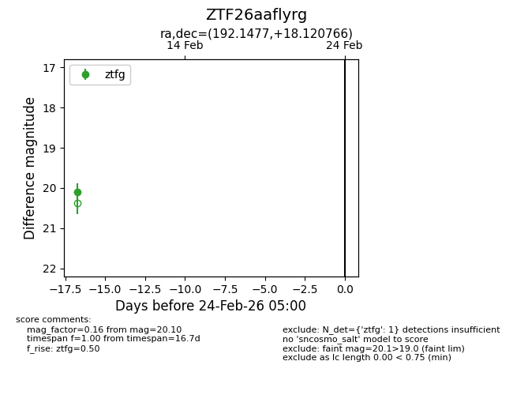
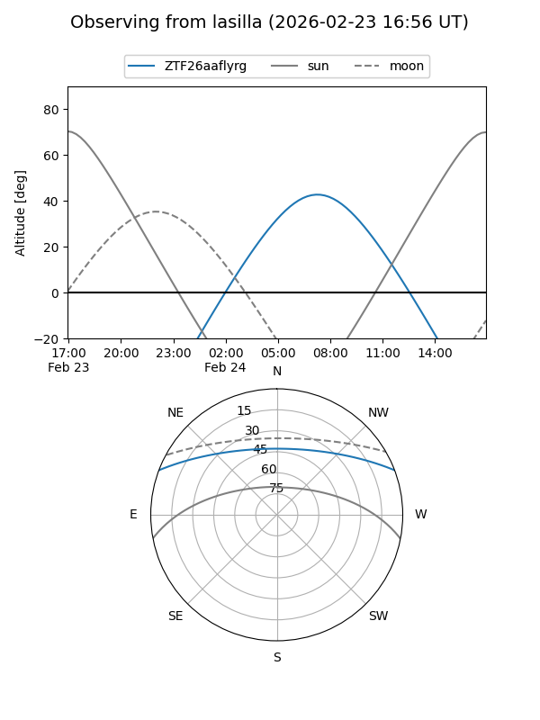
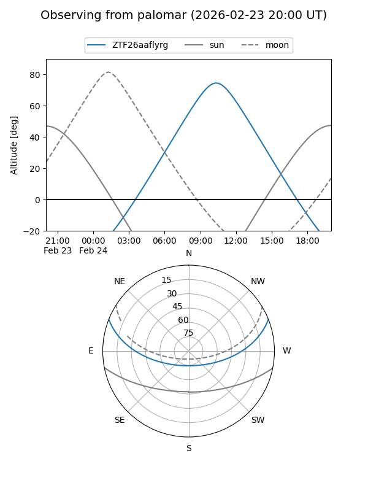

ZTF26aaflyrg
Target ZTF26aaflyrg at 2026-02-24 09:08
Aliases and brokers:
FINK: link
Lasair: link
ALeRCE: link
alt names
ZTF26aaflyrg (ztf,fink_ztf)
Coordinates:
equatorial (ra, dec) = 192.1477,+18.12077
equatorial (HMS+DMS) = 12:48:35.45,+18:07:14.76
galactic (l, b) = (298.6184,+80.96866)
Flags:
Photometry:
last ztfg=20.10
1 ztfg detections
Lightcurve

Visibility


Additional plots